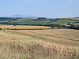

La casa en la que nos alojamos se llamaba Pozzarello ...
La casa en la que nos alojamos se llamaba Pozzarello ...Esta es una breve crónica de mi visita a Italia. Da clic sobre las fotos minuatura para tener una vista más grande de cada fotografía. ¡Disfrúatlo!
La casa en la que nos alojamos se llamaba Pozzarello ...

Aquí puedes continuar con el texto correspondiente al campo... Y aquí el texto correspondiente a Sienna...
Y aquí el texto correspondiente a Sienna...
 Disfrutando de los mejores postres típicos durante el recorrido...
Disfrutando de los mejores postres típicos durante el recorrido...
 Visita guiada a una de las catedrales más emblemáticas...
Visita guiada a una de las catedrales más emblemáticas...
 Hermosos paisajes abiertos cubiertos de lavanda...
Hermosos paisajes abiertos cubiertos de lavanda...